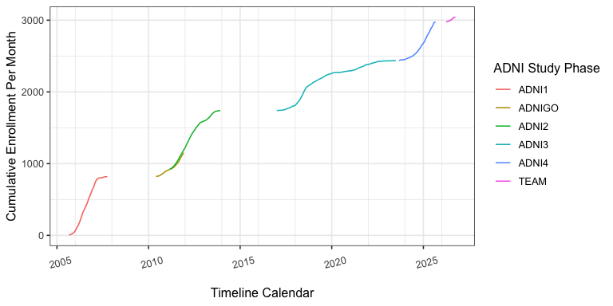
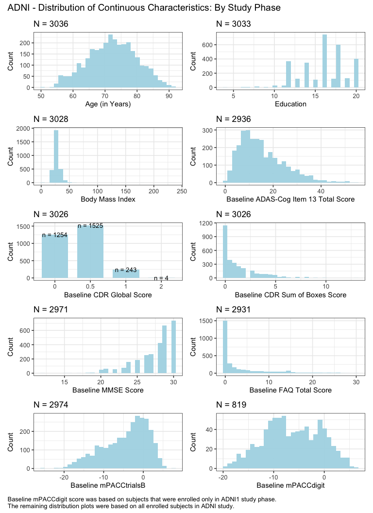
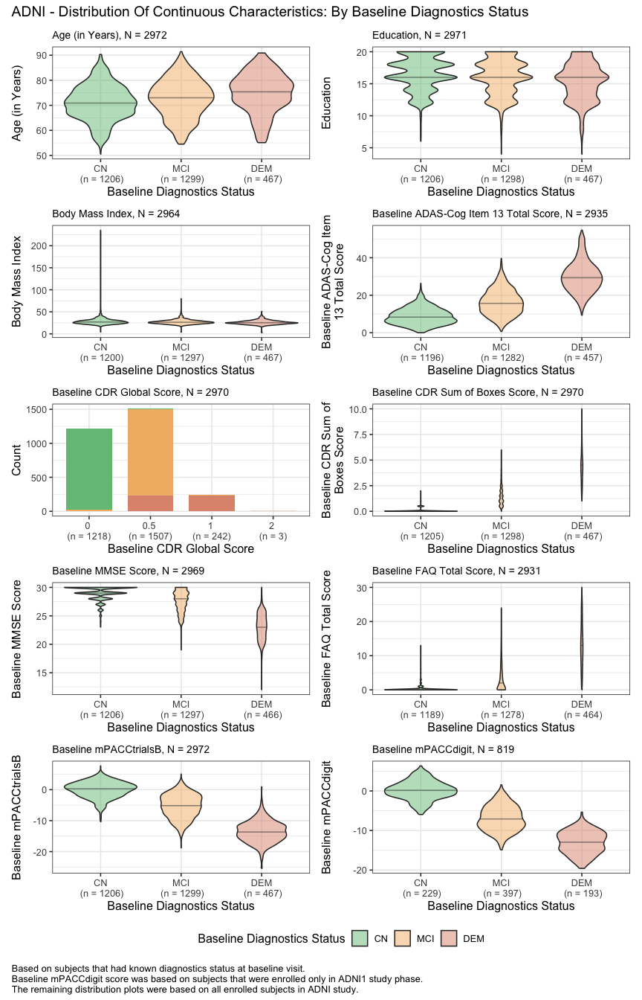

ADNI-Enrollment
Last Updated: October 06, 2026
Source:vignettes/ADNI-Enrollment.Rmd
ADNI-Enrollment.RmdIntroduction
This article demonstrate how to use the ADNIMERGE2 R
package to generate simple enrollment summaries.
Load Required R Packages
Code
Code
Code
# Create default theme for tbl_summary ----
adni_theme <- list(
# Allow multi-line continuous format as default
"tbl_summary-str:default_con_type" = "continuous2",
# To update statistic report style
"tbl_summary-arg:statistic" = list(
all_continuous() ~ c(
"{mean} ({sd})",
"{median} ({p25}, {p75})",
"{min}, {max}"
),
all_categorical() ~ "{n} ({p}%)"
),
# Set default digit/decimal place
"tbl_summary-arg:digits" = list(
all_continuous() ~ 1,
all_continuous2() ~ 1,
all_categorical() ~ c(0, 1)
),
"tbl_summary-arg:missing_text" = "(Missing)",
"tbl_summary-fn:addnl-fn-to-run" = function(x) {
x %>%
# To relabel continuous statistic
add_stat_label(
label = all_continuous2() ~ c("Mean (SD)", "Median (Q1, Q3)", "Range")
) %>%
# To replace any 'NA/NaN/Inf' valu with '-' symbol
modify_table_body(
~ .x %>%
mutate(across(starts_with("stat_"), ~ case_when(
grepl("NA|NaN", .) ~ "-",
grepl("Inf|-Inf", .) ~ "-",
TRUE ~ .
)))
)
}
)
check_gtsummary_theme(adni_theme)
# Set a tbl_summary theme ----
theme_gtsummary_compact(set_theme = TRUE, font_size = 12)
set_gtsummary_theme(adni_theme)Code
# Abbreviation list
abbrev_list <- paste0(
paste0(
"<b>CN</b>: Cognitive Normal; ",
"<b>MCI</b>: Mild Cognitive Impairment; ",
"<b>DEM</b>: Dementia; "
),
paste0(
"<b>SD</b>: Standard Deviation; ",
"<b>Q1</b>: the 25th percentile; ",
"<b>Q3</b>: the 75th percentile; "
),
paste0(
"Baseline <b>mPACCdigit</b> score was based on subjects that were ",
"enrolled only in ADNI1 study phase. "
),
paste0(
"<b>RUCA</b> characteristics is only collected in ADNI4 phase based on ",
"Rural-Urban Commuting Area designation score. "
),
collapse = ";"
)ADNI Enrollment Summaries
Enrollment Overtime
Code
enroll_summary_data <- ADSL %>%
filter(ENRLFL %in% "Y") %>%
mutate(ENRLDT = floor_date(ENRLDT, unit = "month")) %>%
group_by(ENRLDT, ORIGPROT) %>%
summarise(num_enroll = n()) %>%
ungroup() %>%
mutate(ORIGPROT = factor(ORIGPROT, levels = adni_phase())) %>%
arrange(ENRLDT, ORIGPROT) %>%
mutate(cum_num_enroll = cumsum(num_enroll))
enroll_summary_plot <- enroll_summary_data %>%
ggplot(aes(x = ENRLDT, y = cum_num_enroll, color = ORIGPROT)) +
geom_line() +
scale_x_date(
date_minor_breaks = "2 years",
limits = range(enroll_summary_data$ENRLDT)
) +
labs(
x = "Timeline Calendar",
y = "Cumulative Enrollment Per Month",
color = "ADNI Study Phase"
) +
theme(
axis.text.x = element_text(hjust = 0.3, vjust = 0, angle = 15),
axis.title.x = element_text(margin = margin(t = 20))
)
enroll_summary_plot
Demographic Summaries: By Study Phase
Code
# Characteristics/variables
include_vars <- c(
"AGE", "SEX", "EDUC", "RACE", "ETHNIC", "MARISTAT",
"DX", "APOE", "RUCAGR1", "BMI",
"ADASTT13", "CDGLOBAL", "CDRSB", "MMSCORE", "FAQTOTAL"
)
if (params$INCLUDE_PACC) {
pacc_vars <- c("MPACCTRAILSB", "MPACCDIGIT")
include_vars <- c(include_vars, pacc_vars)
}
tbl_summary(
data = ADSL %>%
filter(ENRLFL %in% "Y"),
by = ORIGPROT,
include = include_vars,
type = all_continuous() ~ "continuous2",
percent = "column"
) %>%
add_overall(last = TRUE) %>%
modify_spanning_header(
all_stat_cols(stat_0 = FALSE) ~ "**ADNI Study Phase (N = {N})**"
) %>%
modify_footnote_header(
footnote = "Column-wise percentage; n (%)",
columns = all_stat_cols(),
replace = TRUE
) %>%
modify_abbreviation(abbreviation = abbrev_list) %>%
modify_caption(
caption = paste0(
"Table 1. ADNI - Subject Characteristics: By Study Phase"
)
) %>%
bold_labels()| Characteristic |
ADNI Study Phase (N = 3041)
|
Overall N = 3,0411 |
|||||
|---|---|---|---|---|---|---|---|
|
ADNI1 N = 8191 |
ADNIGO N = 1311 |
ADNI2 N = 7901 |
ADNI3 N = 6961 |
ADNI4 N = 5381 |
TEAM N = 671 |
||
| Age (in Years) | |||||||
| Mean (SD) | 75.2 (6.8) | 71.6 (7.9) | 72.7 (7.2) | 70.7 (7.4) | 69.6 (7.7) | 67.4 (7.6) | 72.2 (7.6) |
| Median (Q1, Q3) | 75.6 (71.2, 80.1) | 71.1 (65.8, 77.4) | 72.8 (67.8, 77.6) | 70.0 (65.9, 75.8) | 69.8 (63.9, 75.0) | 66.5 (61.5, 72.7) | 72.3 (66.9, 77.6) |
| Range | 54.5, 90.9 | 55.6, 88.3 | 55.0, 91.4 | 50.5, 90.7 | 55.0, 90.8 | 55.2, 88.3 | 50.5, 91.4 |
| (Missing) | 0 | 0 | 0 | 0 | 0 | 5 | 5 |
| Sex, n (%) | |||||||
| Female | 342 (41.8%) | 60 (45.8%) | 379 (48.0%) | 381 (54.7%) | 326 (60.6%) | 51 (82.3%) | 1,539 (50.7%) |
| Male | 477 (58.2%) | 71 (54.2%) | 411 (52.0%) | 315 (45.3%) | 212 (39.4%) | 11 (17.7%) | 1,497 (49.3%) |
| (Missing) | 0 | 0 | 0 | 0 | 0 | 5 | 5 |
| Education | |||||||
| Mean (SD) | 15.5 (3.0) | 15.8 (2.7) | 16.3 (2.6) | 16.4 (2.3) | 16.2 (2.6) | 13.2 (2.3) | 16.0 (2.7) |
| Median (Q1, Q3) | 16.0 (13.0, 18.0) | 16.0 (14.0, 18.0) | 16.0 (14.0, 18.0) | 16.0 (15.0, 18.0) | 16.0 (14.0, 18.0) | 12.0 (12.0, 14.0) | 16.0 (14.0, 18.0) |
| Range | 4.0, 20.0 | 10.0, 20.0 | 8.0, 20.0 | 10.0, 20.0 | 8.0, 20.0 | 9.0, 20.0 | 4.0, 20.0 |
| (Missing) | 1 | 0 | 0 | 0 | 0 | 7 | 8 |
| Race, n (%) | |||||||
| American Indian or Alaskan Native | 1 (0.1%) | 1 (0.8%) | 1 (0.1%) | 2 (0.3%) | 4 (0.7%) | 0 (0.0%) | 9 (0.3%) |
| Asian | 14 (1.7%) | 1 (0.8%) | 14 (1.8%) | 29 (4.2%) | 49 (9.1%) | 0 (0.0%) | 107 (3.5%) |
| Black or African American | 39 (4.8%) | 4 (3.1%) | 34 (4.3%) | 105 (15.1%) | 150 (27.9%) | 48 (77.4%) | 380 (12.5%) |
| Native Hawaiian or Other Pacific Islander | 0 (0.0%) | 0 (0.0%) | 2 (0.3%) | 1 (0.1%) | 2 (0.4%) | 0 (0.0%) | 5 (0.2%) |
| Other Pacific Islander | 0 (0.0%) | 0 (0.0%) | 0 (0.0%) | 0 (0.0%) | 0 (0.0%) | 0 (0.0%) | 0 (0.0%) |
| White | 762 (93.0%) | 118 (90.1%) | 728 (92.2%) | 537 (77.2%) | 296 (55.0%) | 9 (14.5%) | 2,450 (80.7%) |
| More than one race | 3 (0.4%) | 5 (3.8%) | 10 (1.3%) | 13 (1.9%) | 26 (4.8%) | 4 (6.5%) | 61 (2.0%) |
| Unknown | 0 (0.0%) | 2 (1.5%) | 1 (0.1%) | 9 (1.3%) | 11 (2.0%) | 1 (1.6%) | 24 (0.8%) |
| (Missing) | 0 | 0 | 0 | 0 | 0 | 5 | 5 |
| Ethnicity, n (%) | |||||||
| Hispanic or Latino | 19 (2.3%) | 8 (6.1%) | 31 (3.9%) | 58 (8.3%) | 77 (14.3%) | 2 (3.2%) | 195 (6.4%) |
| Not Hispanic or Latino | 794 (96.9%) | 122 (93.1%) | 755 (95.6%) | 637 (91.5%) | 459 (85.3%) | 60 (96.8%) | 2,827 (93.1%) |
| Unknown | 6 (0.7%) | 1 (0.8%) | 4 (0.5%) | 1 (0.1%) | 2 (0.4%) | 0 (0.0%) | 14 (0.5%) |
| (Missing) | 0 | 0 | 0 | 0 | 0 | 5 | 5 |
| Marital Status, n (%) | |||||||
| Divorced | 52 (6.4%) | 17 (13.0%) | 82 (10.4%) | 79 (11.4%) | 89 (16.6%) | 14 (22.6%) | 333 (11.0%) |
| Domestic Partnership | 0 (0.0%) | 0 (0.0%) | 0 (0.0%) | 0 (0.0%) | 13 (2.4%) | 1 (1.6%) | 14 (0.5%) |
| Married | 629 (76.9%) | 95 (72.5%) | 586 (74.2%) | 517 (74.4%) | 344 (64.1%) | 12 (19.4%) | 2,183 (72.0%) |
| Never married | 28 (3.4%) | 3 (2.3%) | 33 (4.2%) | 35 (5.0%) | 45 (8.4%) | 21 (33.9%) | 165 (5.4%) |
| Unknown | 1 (0.1%) | 4 (3.1%) | 2 (0.3%) | 2 (0.3%) | 0 (0.0%) | 1 (1.6%) | 10 (0.3%) |
| Widowed | 108 (13.2%) | 12 (9.2%) | 87 (11.0%) | 62 (8.9%) | 46 (8.6%) | 13 (21.0%) | 328 (10.8%) |
| (Missing) | 1 | 0 | 0 | 1 | 1 | 5 | 8 |
| Baseline Diagnostics Status, n (%) | |||||||
| CN | 229 (28.0%) | 1 (0.8%) | 295 (37.3%) | 378 (54.3%) | 303 (56.3%) | - | 1,206 (40.6%) |
| MCI | 397 (48.5%) | 128 (99.2%) | 344 (43.5%) | 244 (35.1%) | 186 (34.6%) | - | 1,299 (43.7%) |
| DEM | 193 (23.6%) | 0 (0.0%) | 151 (19.1%) | 74 (10.6%) | 49 (9.1%) | - | 467 (15.7%) |
| (Missing) | 0 | 2 | 0 | 0 | 0 | 67 | 69 |
| APOE Genotype, n (%) | |||||||
| ε2/ε2 | 2 (0.2%) | 0 (0.0%) | 3 (0.4%) | 1 (0.1%) | 3 (0.7%) | 0 (0.0%) | 9 (0.3%) |
| ε2/ε3 | 53 (6.5%) | 9 (7.0%) | 66 (8.5%) | 53 (7.8%) | 35 (7.6%) | 0 (0.0%) | 216 (7.5%) |
| ε2/ε4 | 18 (2.2%) | 2 (1.6%) | 14 (1.8%) | 17 (2.5%) | 16 (3.5%) | 0 (0.0%) | 67 (2.3%) |
| ε3/ε3 | 363 (44.3%) | 67 (52.3%) | 352 (45.2%) | 347 (51.3%) | 213 (46.4%) | 0 (0.0%) | 1,342 (46.9%) |
| ε3/ε4 | 295 (36.0%) | 42 (32.8%) | 269 (34.5%) | 206 (30.4%) | 148 (32.2%) | 1 (100.0%) | 961 (33.6%) |
| ε4/ε4 | 88 (10.7%) | 8 (6.3%) | 75 (9.6%) | 53 (7.8%) | 44 (9.6%) | 0 (0.0%) | 268 (9.4%) |
| (Missing) | 0 | 3 | 11 | 19 | 79 | 66 | 178 |
| RUCA Designation, n (%) | |||||||
| Rural | - | - | - | - | 20 (4.1%) | 0 (0.0%) | 20 (3.7%) |
| Urban | - | - | - | - | 473 (95.9%) | 48 (100.0%) | 521 (96.3%) |
| (Missing) | 819 | 131 | 790 | 696 | 45 | 19 | 2,500 |
| Body Mass Index | |||||||
| Mean (SD) | 26.1 (4.1) | 28.4 (5.3) | 27.3 (5.2) | 28.1 (9.4) | 28.7 (14.1) | 29.9 (6.7) | 27.5 (8.4) |
| Median (Q1, Q3) | 25.7 (23.3, 28.3) | 27.3 (24.7, 31.1) | 26.4 (24.1, 29.6) | 26.9 (24.0, 30.3) | 26.9 (23.8, 31.3) | 29.0 (26.3, 33.5) | 26.4 (23.8, 29.7) |
| Range | 16.6, 45.8 | 17.9, 45.9 | 16.4, 52.1 | 4.0, 176.8 | 2.6, 235.1 | 4.3, 47.4 | 2.6, 235.1 |
| (Missing) | 2 | 0 | 3 | 2 | 1 | 5 | 13 |
| Baseline ADAS-Cog Item 13 Total Score | |||||||
| Mean (SD) | 18.4 (9.2) | 12.4 (5.4) | 16.1 (10.1) | 13.1 (8.9) | 13.5 (8.8) | - | 15.4 (9.4) |
| Median (Q1, Q3) | 17.7 (11.0, 24.3) | 11.2 (8.7, 15.3) | 13.7 (8.3, 21.7) | 11.0 (6.7, 16.7) | 12.0 (7.0, 17.3) | - | 13.3 (8.3, 21.0) |
| Range | 1.0, 54.7 | 2.3, 28.3 | 0.0, 52.3 | 0.0, 48.3 | 0.0, 51.0 | - | 0.0, 54.7 |
| (Missing) | 8 | 1 | 7 | 10 | 12 | 67 | 105 |
| Baseline CDR Global Score, n (%) | |||||||
| 0 | 229 (28.0%) | 0 (0.0%) | 296 (37.5%) | 385 (55.3%) | 308 (57.4%) | 36 (66.7%) | 1,254 (41.4%) |
| 0.5 | 496 (60.6%) | 131 (100.0%) | 407 (51.5%) | 269 (38.6%) | 206 (38.4%) | 16 (29.6%) | 1,525 (50.4%) |
| 1 | 93 (11.4%) | 0 (0.0%) | 86 (10.9%) | 40 (5.7%) | 23 (4.3%) | 1 (1.9%) | 243 (8.0%) |
| 2 | 0 (0.0%) | 0 (0.0%) | 1 (0.1%) | 2 (0.3%) | 0 (0.0%) | 1 (1.9%) | 4 (0.1%) |
| (Missing) | 1 | 0 | 0 | 0 | 1 | 13 | 15 |
| Baseline CDR Sum of Boxes Score | |||||||
| Mean (SD) | 1.8 (1.8) | 1.2 (0.7) | 1.5 (1.9) | 1.0 (1.6) | 0.9 (1.4) | 0.8 (1.9) | 1.4 (1.7) |
| Median (Q1, Q3) | 1.5 (0.0, 3.0) | 1.0 (0.5, 1.5) | 1.0 (0.0, 2.5) | 0.0 (0.0, 1.5) | 0.0 (0.0, 1.5) | 0.0 (0.0, 0.5) | 0.5 (0.0, 2.0) |
| Range | 0.0, 9.0 | 0.5, 4.0 | 0.0, 10.0 | 0.0, 10.0 | 0.0, 8.0 | 0.0, 13.0 | 0.0, 13.0 |
| (Missing) | 1 | 0 | 0 | 0 | 1 | 13 | 15 |
| Baseline MMSE Score | |||||||
| Mean (SD) | 26.7 (2.7) | 28.3 (1.5) | 27.4 (2.7) | 28.0 (2.5) | 27.8 (2.5) | - | 27.5 (2.6) |
| Median (Q1, Q3) | 27.0 (25.0, 29.0) | 28.0 (27.0, 30.0) | 28.0 (26.0, 30.0) | 29.0 (27.0, 30.0) | 29.0 (27.0, 30.0) | - | 28.0 (26.0, 29.0) |
| Range | 18.0, 30.0 | 23.0, 30.0 | 19.0, 30.0 | 16.0, 30.0 | 12.0, 30.0 | - | 12.0, 30.0 |
| (Missing) | 1 | 0 | 0 | 0 | 2 | 67 | 70 |
| Baseline FAQ Total Score | |||||||
| Mean (SD) | 5.0 (6.6) | 1.9 (3.2) | 3.9 (6.2) | 2.5 (5.2) | 2.7 (5.1) | - | 3.6 (5.9) |
| Median (Q1, Q3) | 2.0 (0.0, 8.0) | 1.0 (0.0, 2.0) | 1.0 (0.0, 5.0) | 0.0 (0.0, 2.0) | 0.0 (0.0, 3.0) | - | 0.0 (0.0, 5.0) |
| Range | 0.0, 30.0 | 0.0, 22.0 | 0.0, 28.0 | 0.0, 30.0 | 0.0, 25.0 | - | 0.0, 30.0 |
| (Missing) | 3 | 2 | 6 | 20 | 12 | 67 | 110 |
| Baseline mPACCtrialsB | |||||||
| Mean (SD) | -6.6 (5.6) | -2.9 (2.8) | -4.6 (5.8) | -2.8 (5.5) | -3.6 (5.4) | - | -4.5 (5.7) |
| Median (Q1, Q3) | -6.7 (-10.9, -2.1) | -2.4 (-4.9, -1.0) | -3.1 (-8.4, -0.2) | -1.3 (-5.5, 1.0) | -2.4 (-6.3, 0.5) | - | -3.1 (-8.3, 0.0) |
| Range | -20.2, 5.4 | -10.6, 2.7 | -21.3, 5.4 | -22.5, 7.7 | -25.4, 5.8 | - | -25.4, 7.7 |
| (Missing) | 0 | 0 | 0 | 0 | 0 | 67 | 67 |
| Baseline mPACCdigit | |||||||
| Mean (SD) | -6.4 (5.5) | - | - | - | - | - | -6.4 (5.5) |
| Median (Q1, Q3) | -6.6 (-10.4, -1.6) | - | - | - | - | - | -6.6 (-10.4, -1.6) |
| Range | -19.6, 6.3 | - | - | - | - | - | -19.6, 6.3 |
| (Missing) | 0 | 131 | 790 | 696 | 538 | 67 | 2,222 |
| 1 Column-wise percentage; n (%) | |||||||
| Abbreviation: CN: Cognitive Normal; MCI: Mild Cognitive Impairment; DEM: Dementia; SD: Standard Deviation; Q1: the 25th percentile; Q3: the 75th percentile; Baseline mPACCdigit score was based on subjects that were enrolled only in ADNI1 study phase. RUCA characteristics is only collected in ADNI4 phase based on Rural-Urban Commuting Area designation score. | |||||||
Code
var_label_list <- get_variable_labels(ADSL)
cont_var_list <- c(
"AGE", "EDUC", "BMI", "ADASTT13", "CDGLOBAL",
"CDRSB", "MMSCORE", "FAQTOTAL"
)
if (params$INCLUDE_PACC) {
cont_var_list <- c(cont_var_list, pacc_vars)
}
cont_bl_distr_plot <- lapply(cont_var_list, function(x) {
graph_data <- ADSL %>%
filter(ENRLFL %in% "Y") %>%
rename_with(~ paste0("yvalue"), all_of(x)) %>%
filter(!is.na(yvalue))
if (x == "CDGLOBAL") {
distr_plot <- graph_data %>%
mutate(yvalue = factor(yvalue, levels = c(0, 0.5, 1:3))) %>%
ggplot(data = ., aes(x = yvalue)) +
geom_bar(alpha = 0.95, fill = "#ADD8E6", width = 0.75) +
geom_text(
stat = "count",
aes(label = paste0("n = ", after_stat(count))),
size = 3.5, color = "#000000"
)
} else {
distr_plot <- graph_data %>%
ggplot(data = ., aes(x = yvalue)) +
geom_histogram(alpha = 0.95, fill = "#ADD8E6")
}
distr_plot <- distr_plot +
labs(
x = var_label_list[[x]],
y = "Count",
title = paste0("N = ", sum(!is.na(graph_data$yvalue))),
fill = ""
) +
theme(
title = element_text(size = 11),
legend.position = "none"
)
return(distr_plot)
})
names(cont_bl_distr_plot) <- cont_var_list
plots(
cont_bl_distr_plot,
n_columns = 2,
caption = ifelse(params$INCLUDE_PACC, paste0(
"Baseline mPACCdigit score was based on subjects that were enrolled only ",
"in ADNI1 study phase. \nThe remaining distribution plots were based on ",
"all enrolled subjects in ADNI study."
), ""),
title = "ADNI - Distribution of Continuous Characteristics: By Study Phase",
theme = theme(
plot.caption = element_text(hjust = 0),
plot.caption.position = "plot"
)
)
Demographic Summaries: By Baseline Diagnostics Status
Code
tbl_summary(
data = ADSL %>%
filter(ENRLFL %in% "Y"),
by = DX,
include = include_vars,
percent = "row"
) %>%
modify_spanning_header(
all_stat_cols() ~ paste0("**", get_variable_labels(ADSL$DX), " (N = {N})**")
) %>%
modify_footnote_header(
footnote = "Row-wise percentage; n (%)",
columns = all_stat_cols(),
replace = TRUE
) %>%
modify_abbreviation(abbreviation = abbrev_list) %>%
modify_caption(
caption = paste0(
"Table 2. ADNI - Subject Characteristics: By ", get_variable_labels(ADSL$DX)
)
) %>%
bold_labels()| Characteristic |
Baseline Diagnostics Status (N = 2972)
|
||
|---|---|---|---|
|
CN N = 1,2061 |
MCI N = 1,2991 |
DEM N = 4671 |
|
| Age (in Years) | |||
| Mean (SD) | 71.0 (7.0) | 72.6 (7.6) | 74.8 (7.9) |
| Median (Q1, Q3) | 70.9 (66.4, 75.9) | 73.0 (67.3, 78.1) | 75.4 (70.3, 80.4) |
| Range | 50.5, 90.3 | 54.5, 91.4 | 55.1, 90.9 |
| Sex, n (%) | |||
| Female | 729 (49.0%) | 555 (37.3%) | 204 (13.7%) |
| Male | 477 (32.1%) | 744 (50.1%) | 263 (17.7%) |
| Education | |||
| Mean (SD) | 16.5 (2.5) | 16.0 (2.7) | 15.3 (2.9) |
| Median (Q1, Q3) | 16.0 (15.0, 18.0) | 16.0 (14.0, 18.0) | 16.0 (13.0, 18.0) |
| Range | 6.0, 20.0 | 4.0, 20.0 | 4.0, 20.0 |
| (Missing) | 0 | 1 | 0 |
| Race, n (%) | |||
| American Indian or Alaskan Native | 5 (55.6%) | 4 (44.4%) | 0 (0.0%) |
| Asian | 61 (57.0%) | 35 (32.7%) | 11 (10.3%) |
| Black or African American | 202 (60.8%) | 100 (30.1%) | 30 (9.0%) |
| Native Hawaiian or Other Pacific Islander | 2 (40.0%) | 3 (60.0%) | 0 (0.0%) |
| Other Pacific Islander | - | - | - |
| White | 897 (36.8%) | 1,125 (46.1%) | 417 (17.1%) |
| More than one race | 30 (52.6%) | 19 (33.3%) | 8 (14.0%) |
| Unknown | 9 (39.1%) | 13 (56.5%) | 1 (4.3%) |
| Ethnicity, n (%) | |||
| Hispanic or Latino | 105 (54.4%) | 67 (34.7%) | 21 (10.9%) |
| Not Hispanic or Latino | 1,096 (39.6%) | 1,226 (44.3%) | 443 (16.0%) |
| Unknown | 5 (35.7%) | 6 (42.9%) | 3 (21.4%) |
| Marital Status, n (%) | |||
| Divorced | 171 (53.6%) | 132 (41.4%) | 16 (5.0%) |
| Domestic Partnership | 8 (61.5%) | 4 (30.8%) | 1 (7.7%) |
| Married | 800 (36.9%) | 975 (44.9%) | 395 (18.2%) |
| Never married | 85 (59.0%) | 46 (31.9%) | 13 (9.0%) |
| Unknown | 3 (33.3%) | 6 (66.7%) | 0 (0.0%) |
| Widowed | 139 (44.3%) | 133 (42.4%) | 42 (13.4%) |
| (Missing) | 0 | 3 | 0 |
| APOE Genotype, n (%) | |||
| ε2/ε2 | 5 (55.6%) | 3 (33.3%) | 1 (11.1%) |
| ε2/ε3 | 128 (59.3%) | 73 (33.8%) | 15 (6.9%) |
| ε2/ε4 | 23 (34.3%) | 32 (47.8%) | 12 (17.9%) |
| ε3/ε3 | 631 (47.0%) | 577 (43.0%) | 134 (10.0%) |
| ε3/ε4 | 300 (31.3%) | 456 (47.5%) | 204 (21.3%) |
| ε4/ε4 | 45 (16.8%) | 132 (49.3%) | 91 (34.0%) |
| (Missing) | 74 | 26 | 10 |
| RUCA Designation, n (%) | |||
| Rural | 12 (60.0%) | 7 (35.0%) | 1 (5.0%) |
| Urban | 259 (54.8%) | 166 (35.1%) | 48 (10.1%) |
| (Missing) | 935 | 1,126 | 418 |
| Body Mass Index | |||
| Mean (SD) | 28.4 (11.5) | 27.1 (5.3) | 25.9 (4.9) |
| Median (Q1, Q3) | 26.9 (24.1, 30.5) | 26.4 (23.9, 29.4) | 25.3 (23.1, 28.4) |
| Range | 4.1, 235.1 | 3.8, 79.7 | 2.6, 50.6 |
| (Missing) | 6 | 2 | 0 |
| Baseline ADAS-Cog Item 13 Total Score | |||
| Mean (SD) | 8.9 (4.4) | 16.3 (6.8) | 29.9 (8.2) |
| Median (Q1, Q3) | 8.3 (5.3, 11.7) | 15.7 (11.0, 21.0) | 29.3 (24.3, 34.7) |
| Range | 0.0, 26.3 | 0.7, 39.7 | 9.3, 54.7 |
| (Missing) | 10 | 17 | 10 |
| Baseline CDR Global Score, n (%) | |||
| 0 | 1,195 (98.1%) | 23 (1.9%) | 0 (0.0%) |
| 0.5 | 10 (0.7%) | 1,268 (84.1%) | 229 (15.2%) |
| 1 | 0 (0.0%) | 7 (2.9%) | 235 (97.1%) |
| 2 | 0 (0.0%) | 0 (0.0%) | 3 (100.0%) |
| (Missing) | 1 | 1 | 0 |
| Baseline CDR Sum of Boxes Score | |||
| Mean (SD) | 0.0 (0.2) | 1.5 (1.0) | 4.4 (1.7) |
| Median (Q1, Q3) | 0.0 (0.0, 0.0) | 1.5 (1.0, 2.0) | 4.5 (3.0, 5.0) |
| Range | 0.0, 2.0 | 0.0, 6.0 | 1.0, 10.0 |
| (Missing) | 1 | 1 | 0 |
| Baseline MMSE Score | |||
| Mean (SD) | 29.0 (1.2) | 27.6 (1.9) | 23.1 (2.3) |
| Median (Q1, Q3) | 29.0 (29.0, 30.0) | 28.0 (26.0, 29.0) | 23.0 (21.0, 25.0) |
| Range | 23.0, 30.0 | 19.0, 30.0 | 12.0, 30.0 |
| (Missing) | 0 | 2 | 1 |
| Baseline FAQ Total Score | |||
| Mean (SD) | 0.2 (0.9) | 3.2 (4.2) | 13.2 (6.9) |
| Median (Q1, Q3) | 0.0 (0.0, 0.0) | 2.0 (0.0, 5.0) | 13.0 (8.0, 18.0) |
| Range | 0.0, 13.0 | 0.0, 24.0 | 0.0, 30.0 |
| (Missing) | 17 | 21 | 3 |
| Baseline mPACCtrialsB | |||
| Mean (SD) | 0.0 (2.6) | -5.3 (3.8) | -13.6 (3.4) |
| Median (Q1, Q3) | 0.3 (-1.7, 1.9) | -5.2 (-8.1, -2.3) | -13.7 (-16.0, -11.4) |
| Range | -10.3, 7.7 | -18.8, 5.1 | -25.4, 0.9 |
| Baseline mPACCdigit | |||
| Mean (SD) | 0.1 (2.4) | -6.9 (3.1) | -13.0 (2.9) |
| Median (Q1, Q3) | 0.2 (-1.3, 1.7) | -7.1 (-9.3, -4.6) | -13.0 (-15.2, -10.9) |
| Range | -6.0, 6.3 | -14.9, 1.6 | -19.6, -5.4 |
| (Missing) | 977 | 902 | 274 |
| 1 Row-wise percentage; n (%) | |||
| Abbreviation: CN: Cognitive Normal; MCI: Mild Cognitive Impairment; DEM: Dementia; SD: Standard Deviation; Q1: the 25th percentile; Q3: the 75th percentile; Baseline mPACCdigit score was based on subjects that were enrolled only in ADNI1 study phase. RUCA characteristics is only collected in ADNI4 phase based on Rural-Urban Commuting Area designation score. | |||
Code
dx_color_pal <- c("#73C186", "#F2B974", "#DF957C", "#999999")
# Create barchart/density plot
cont_distr_plot_bl_dx <- lapply(cont_var_list, function(x) {
graph_data <- ADSL %>%
filter(ENRLFL %in% "Y") %>%
rename_with(~ paste0("yvalue"), all_of(x)) %>%
filter(!is.na(DX) & !is.na(yvalue)) %>%
group_by(DX) %>%
mutate(DX_LABEL = paste0(DX, "\n (n = ", sum(!is.na(yvalue)), ")")) %>%
ungroup()
dxlabel_lvls <- graph_data %>%
distinct(DX, DX_LABEL) %>%
arrange(DX) %>%
pull(DX_LABEL)
graph_data <- graph_data %>%
mutate(DX_LABEL = factor(DX_LABEL, levels = dxlabel_lvls))
if (x == "CDGLOBAL") {
graph_data <- graph_data %>%
mutate(yvalue = factor(yvalue, levels = c(0, 0.5, 1:3))) %>%
group_by(yvalue) %>%
mutate(yvalue = paste0(yvalue, " \n(n = ", n(), ")")) %>%
ungroup()
distr_plot <- graph_data %>%
ggplot(data = ., aes(x = yvalue, fill = DX)) +
geom_bar(position = "stack", width = 0.75, show.legend = FALSE)
} else {
distr_plot <- graph_data %>%
ggplot(data = ., aes(x = DX_LABEL, y = yvalue, fill = DX)) +
geom_violin(alpha = 0.5, trim = TRUE, draw_quantiles = .5)
}
distr_plot <- distr_plot +
labs(
x = ifelse(x == "CDGLOBAL", var_label_list[[x]], get_variable_labels(ADSL$DX)),
y = ifelse(x == "CDGLOBAL", "Count", var_label_list[[x]]) %>%
apply_label_wrap(),
color = get_variable_labels(ADSL$DX),
title = paste0(var_label_list[[x]], ", N = ", nrow(graph_data)),
# subtitle = paste0("By ", get_variable_labels(ADSL$DX), ", N = ", nrow(graph_data)),
fill = get_variable_labels(ADSL$DX)
) +
scale_fill_manual(values = dx_color_pal) +
theme(
legend.position = "bottom",
plot.title = element_text(size = 10.5),
plot.subtitle = element_text(size = 9.5)
)
return(distr_plot)
})
names(cont_distr_plot_bl_dx) <- cont_var_list
plot_caption <- paste0(
"Based on subjects that had known diagnostics status at baseline visit.",
ifelse(params$INCLUDE_PACC == TRUE,
paste0(
"\nBaseline mPACCdigit score was based on subjects that were enrolled only ",
"in ADNI1 study phase. \nThe remaining distribution plots were based on ",
"all enrolled subjects in ADNI study."
),
" "
)
)
plots(
cont_distr_plot_bl_dx,
n_columns = 2,
guides = "collect",
caption = plot_caption,
title = paste0(
"ADNI - Distribution Of Continuous Characteristics: By ",
get_variable_labels(ADSL$DX)
),
theme = theme(
legend.position = "bottom",
plot.caption = element_text(hjust = 0),
plot.caption.position = "plot"
)
)